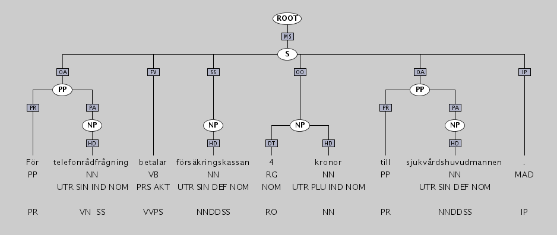
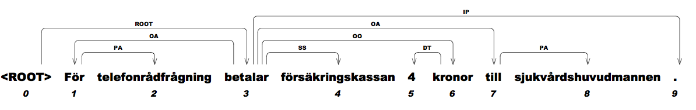

The Swedish Treebank is a syntactically annotated corpus of Swedish, created by merging, harmonizing and partially reannotating two existing corpora, Talbanken [1, 2] and the Stockholm-Umeå Corpus (SUC) [3,4]. The Swedish Treebank has been created through a collaboration between the Department of Linguistics and Philology at Uppsala University and the School of Mathematics and Systems Engineering at Växjö University. The treebank is distributed by Språkbanken at the University of Gothenburg and is freely available for research and education but requires the user to have a license for SUC 2.0.
Below we begin by describing the overall process of merging, harmonizing and reannotating the two source corpora, and the way in which this process has determined properties of the synthesized treebank. We then go on to describe the following aspects of the treebank and its annotation:
We conclude with acknowledgments and references.
Talbanken: Talbanken is a syntactically annotated corpus, containing both written and spoken Swedish, produced in the 1970s at the Department of Scandinavian Languages, Lund University, by a group led by Ulf Teleman. In total, the corpus contains about 350,000 tokens, divided into 200,000 tokens of written text (professional prose and high school essays) and 150,000 tokens of spoken language (interviews, debates, and informal conversations). The original annotation, known as MAMBA and described in [5], consists of two layers: a lexical layer, with parts of speech and morphological features, and a syntactic layer, with a relatively flat phrase structure and grammatical functions.
SUC: SUC is a balanced corpus of written Swedish, modeled after the Brown Corpus and similar corpora for English, developed at Stockholm University and at Umeå University in a project led by Gunnel Källgren and Eva Ejerhed. The corpus consists of 1.2 million tokens of text from a variety of different genres, the corpus encoding follows the guidelines of the Text Encoding Initiative (TEI), and the annotation includes lemmatization, parts of speech, morphological features, and named entities.
In order to merge and harmonize these two corpora into the Swedish Treebank, we have adopted the following overall strategy:
The overall guiding principle has been to modify SUC as little as possible (given that it is the larger corpus and also a de facto standard for Swedish) and to make Talbanken conform to SUC instead of the other way round. The only place where this is not possible is for the syntactic annotation layer, which is missing in SUC.
Version 1.1 of the Swedish Treebank includes all of SUC but only the professional prose section of Talbanken. The annotation is limited to morphology and syntax. The unified morphological annotation consists of basic parts of speech and morphological features following the SUC annotation guidelines. (In addition, the SUC part contains lemmas, and the Talbanken part contains the original lexical tags according to MAMBA.) The syntactic annotation mainly consists of phrase structure and grammatical functions but has also been converted automatically to dependency structure using head percolation rules. The status of harmonization and manual revision is as follows:
In the following three sections, we give a brief description of the guidelines for tokenization and sentence segmentation, morphological annotation, and syntactic annotation, respectively.
Tokenization follows the principles of SUC. Words separated by
whitespace or punctuation in the original text are considered separate tokens, as are
punctuation marks. Exception is made for abbreviations containing punctuation and/or
whitespace, which are kept together as one token with whitespace replaced by an underscore,
e.g., t.ex. and t_ex.
Sentences are segmented according to the principles of SUC, where a sentence is treated as
the longest sequence of tokens between two major delimiters, defined as one of the punctuation
marks ., ?, !, :, or combinations thereof. In addition, list items are treated
as separate sentences.
The morphological annotation consists of part-of-speech categories and morphological features, following the principles of SUC. Guidelines for these categories can be found in [6], except for the PL category (verb particle), which was not part of the original system but is used in both releases of the SUC corpus. For PL we have relied on the actual annotation in SUC 2.0 and on internal documentation from the SUC project. In the Talbanken part we have also retained the original lexical annotation layer from MAMBA, and in the SUC part we have retained the annotation of lemmas. Besides describing the different category systems (and the principles governing the use of the PL category), we summarize the main principles used for the manual revision of the morphological annotation in Talbanken.
For further information about the part-of-speech categories and the morphological features, we refer to [6,7]. For a description of the lexical categories inherited from MAMBA, we refer to [4].
The primary syntactic annotation of each sentence takes the form of a constituent structure, where constituents are labeled with structural categories (phrase types), while edges connecting constituents are labeled with functional categories (grammatical functions) indicating the role of the lower constituent within the higher. The set of structural categories used is a small set of conventional phrase types, such as S for sentence/clause, NP for noun phrase, VP for verb phrase, etc. The set of functional categories is inherited from the MAMBA annotation scheme with a small extension for structures that were not annotated in the original version of Talbanken. This annotation has been projected to SUC by training a parser on Talbanken, parsing the entire SUC corpus, and manually revising a small sample of about 20,000 tokens to be used for evaluation purposes, which we will refer to as the gold standard section of SUC. Sentences that have not been revised manually have been flagged automatically in case they contain configurations of structural and functional categories that are not licensed by the annotation scheme. (This is to allow users who are concerned about the quality of annotation to filter out sentences that contain either a certain number of flags or a specific type of flag.) Finally, we have automatically converted the constituent structure annotation in both Talbanken and SUC, using head percolation rules to determine the head of each phrase and using a subset of the grammatical functions to label dependency edges. Besides describing the different category systems, we summarize the main principles used for the manual revision of the syntactic annotation in SUC.
For a detailed description of the functional categories inherited from MAMBA, we refer to [4].
Version 1.1 of the Swedish Treebank is distributed in three different forms with respect to document structure:
The Swedish Treebank is primarily encoded in TIGER-XML, which supports easy browsing using TIGERSearch, a GUI-based tool with advanced search facilities. Here is an example of an annotated sentence, as it appears in TIGERSearch:
The corresponding TIGER-XML encoding is the following:
<s id="P103_14">
<graph root="P103_14_507">
<terminals>
<t id="P103_14_1" word="För" lemma="--" pos="PP" morph="--" mambalex="PR" flags="--" />
<t id="P103_14_2" word="telefonrådfrågning" lemma="--" pos="NN" morph="UTR SIN IND NOM" mambalex="VN SS" flags="--" />
<t id="P103_14_3" word="betalar" lemma="--" pos="VB" morph="PRS AKT" mambalex="VVPS" flags="--" />
<t id="P103_14_4" word="försäkringskassan" lemma="--" pos="NN" morph="UTR SIN DEF NOM" mambalex="NNDDSS" flags="--" />
<t id="P103_14_5" word="4" lemma="--" pos="RG" morph="NOM" mambalex="RO" flags="--" />
<t id="P103_14_6" word="kronor" lemma="--" pos="NN" morph="UTR PLU IND NOM" mambalex="NN" lemma="--" flags="--" />
<t id="P103_14_7" word="till" lemma="--" pos="PP" morph="--" mambalex="PR" flags="--" />
<t id="P103_14_8" word="sjukvårdshuvudmannen" lemma="--" pos="NN" morph="UTR SIN DEF NOM" mambalex="NNDDSS" lemma="--" flags="--" />
<t id="P103_14_9" word="." lemma="--" pos="MAD" morph="--" mambalex="IP" flags="--" />
</terminals>
<nonterminals>
<nt id="P103_14_507" cat="ROOT" flags="--">
<edge idref="P103_14_506" label="MS" />
</nt>
<nt id="P103_14_506" cat="S" flags="--">
<edge idref="P103_14_505" label="OA" />
<edge idref="P103_14_3" label="FV" />
<edge idref="P103_14_504" label="SS" />
<edge idref="P103_14_503" label="OO" />
<edge idref="P103_14_502" label="OA" />
<edge idref="P103_14_9" label="IP" />
</nt>
<nt id="P103_14_505" cat="PP" flags="--">
<edge idref="P103_14_1" label="PR" />
<edge idref="P103_14_501" label="PA" />
</nt>
<nt id="P103_14_504" cat="NP" flags="--">
<edge idref="P103_14_4" label="HD" />
</nt>
<nt id="P103_14_503" cat="NP" flags="--">
<edge idref="P103_14_5" label="DT" />
<edge idref="P103_14_6" label="HD" />
</nt>
<nt id="P103_14_502" cat="PP" flags="--">
<edge idref="P103_14_7" label="PR" />
<edge idref="P103_14_500" label="PA" />
</nt>
<nt id="P103_14_501" cat="NP" flags="--">
<edge idref="P103_14_2" label="HD" />
</nt>
<nt id="P103_14_500" cat="NP" flags="--">
<edge idref="P103_14_8" label="HD" />
</nt>
</nonterminals>
</graph>
</s>
A sentence (<s>) consists of a syntax graph (<graph>), consisting of terminals (<t>) and nonterminals (<nt>) connected by edges (<edge>). Terminal nodes have the following attribues:
Nonterminal nodes have the following attributes:
Edges have the following attributes:
Missing attribute values are consistently marked by "--".
The dependency structure version of the Swedish Treebank is distributed in the CoNLL format, which has become a de facto standard for dependency treebanks and can be browsed using (for example) MaltEval. Here is the same annotated sentence as it appears in MaltEval:
The corresponding CoNLL encoding looks as follows:
1 För _ PP PP _ 3 OA 2 telefonrådfrågning _ NN NN UTR|SIN|IND|NOM 1 PA 3 betalar _ VB VB PRS|AKT 0 ROOT 4 försäkringskassan _ NN NN UTR|SIN|DEF|NOM 3 SS 5 4 _ RG RG NOM 6 DT 6 kronor _ NN NN UTR|PLU|IND|NOM 3 OO 7 till _ PP PP _ 3 OA 8 sjukvårdshuvudmannen _ NN NN UTR|SIN|DEF|NOM 7 PA 9 . _ MAD MAD _ 3 IP
The meaning of the eight columns is as follows:
Missing values are consistently marked by "_".
We gratefully acknowledge the work done by the original creators of Talbanken at Lund University [1, 2, 5, 8, 9, 10, 11] and of SUC at Stockholm University and Umeå University [6, 3, 5, 7], without which the Swedish Treebank clearly would not have existed at all. The work on synthesizing the treebank has been carried out by Joakim Nivre, Beáta Megyesi, Sofia Gustafson-Capková, Filip Salomonsson, Bengt Dahlqvist, and Anna Sågvall Hein at Uppsala University and by Johan Hall and Jens Nilsson at Växjö University. We are grateful to all the participants of the Swedish Treebank workshop held in conjunction with the Swedish Language Technology Conference in Stockholm, November 21, 2009, for valuable feedback. In particular, we want to thank our special commentators Lars Ahrenberg, Lars Borin, Elisabet Engdahl, and Janne Bondi Johannessen. Finally, we want to thank Lars Borin and his team at Språkbanken for their help in distributing the Swedish Treebank.